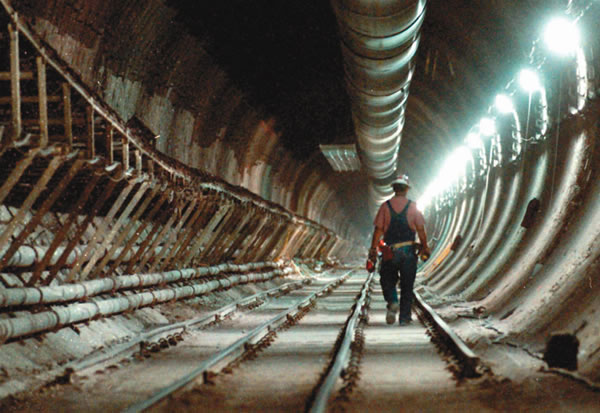

AP PHOTO/NEVADA APPEAL, RICK GUNN
More than 200 solar panels generate power outside an abandoned nuclear power plant near Richland, Wash. This solar project is an exploration into renewable energy by the public power agency Energy Northwest, which provides electricity to public utilities in the Northwest.